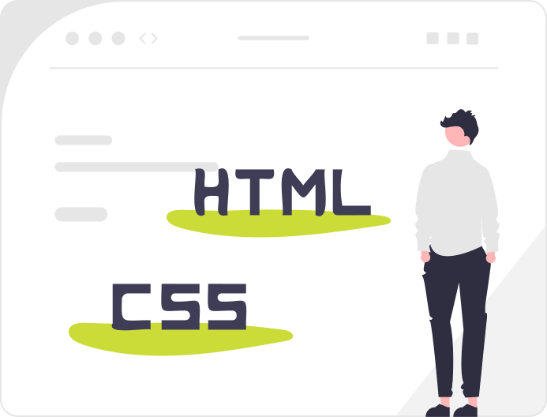

Thème 1 : Le Web⚓︎
Le Web (toile) désigne un système donnant accès à un ensemble de données (page, image, son, vidéo) reliées par des liens hypertextes et accessibles sur le réseau Internet.

Initiation aux langages du Web : HTML/CSS⚓︎
Rejoindre la classe sur https://fr.khanacademy.org/join/VKS5ATN4 pour suivre les leçons de la Khan Academy : KhanAcademy, introduction à HTML/CSS et en parallèle copier/coller vos codes dans des cellules MarkDown d'un Notebook Jupyter sur Capytale n° 35cd-4096157, enregistrer une copie de votre travail sur votre iPad dans le dossier de l'application Carnets afin d'y conserver une trace de votre travail...
- Pensez à enrichir vos codes avec vos explications personnelles.
- A l'issue, rendez votre notebook bilan personnel sur Capytale.

Introduction au web⚓︎
- En équipe, regarder chacun une des vidéos suivantes et relever les mots clefs et acronymes associés au thème du web ;
- Comparer vos rélevés avec ceux des autres membres de l'équipe et compléter votre liste d'apprentissage au format HTML dans une cellule
Markdownde votre Notebook Jupyter sur Capytale n° 35cd-4096157 ;
- Indiquez sur ce document les prénoms de chaque membre de votre équipe ;
Coder une page WEB en HTML et CSS⚓︎
Quelques notions essentielles à retenir⚓︎
| Notion | Définition |
|---|---|
| Web = WWW = toile | Le World Wide Web = le Web désigne un ensemble de ressources numériques disponibles sur Internet |
| Internet | C'est un réseau internationnal de machines interconnectées, le réseau des réseaux |
| Web != Internet | Le Web est un des nombreux services accessibles à travers internet |
| ARPANET 1970 | C'est le premier réseau à transfert de paquets de données |
| Tim BERNER LEE en 1990 | C'est l'inventeur du Web |
| Hypertexte | Le Web est basé sur des liens hypertextes qui permettent de surfer d'une ressource à une autre |
| Site Web | Ensemble des dossiers et fichiers d'une ressource comprenant une ou plusieurs pages Web |
| HTML | Hyper Text Markup Language, langage de description à l'aide de balises du contenu d'une page web |
| CSS | Cascading Style Sheets, langage de description du style d'une page web |
| index.html | .html est l'extension d'un fichier codé en HTML, la page nommée index est par défaut la page d'accueil d'un site Web |
| style.css | .css est l'extension d'un fichier codé en CSS, un seul fichier peut servir pour définir le style commun à plusieurs pages d'un site |
| Javascript | C'est le langage de programmation d'une page web pour produire de l'interaction coté client |
| script.js | .js est l'extension d'un fichier codé en JavaScript |
| MarkDown | C'est un langage de balisage léger basé sur HTML avec l'objectif d'offrir une syntaxe, plus facile à lire et à écrire que du code HTML |
| Navigateur | Pour pouvoir accéder à des pages Web, les internautes utilisent des logiciels appelés navigateurs |
| Client / Serveur | On nomme client, le navigateur qui demande à un serveur Web le contenu qu'il héberge pour ensuite les afficher |
| HTTP / HTTPS | Ce sont les protocoles de communication entre clients et serveurs Web, HTTP (HyperText Transfer Protocol) ou HTTPS sa version sécurisée (HyperText Transfer Protocol Secure) |
| Faire une requête HTTP | C'est la demande que fait un client à un serveur selon le protocole HTTP pour obtenir une ressource |
| Code 200, 404 | Ce sont des codes de réponse d'un serveur à une requète HTTP, 200 : succès de la requête, 404 : ressource non trouvée, 403 : accès refusé, ... |
| URL | Uniform Resource Locator, indique le protocole utilisé (https://), le nom de domaine du service hébergeant la ressource (ericecmorlaix.github.io/), puis le chemin à suivre pour trouver la ressource sur le serveur (SNT-2GT4_2024-2025/Web/index.html) |
| arborescence | le chemin à suivre pour trouver la ressource sur le serveur |
| chemin absolu/relatif | Un chemin absolu est l'URL complète d'une ressource disponible sur le Web. Tandis qu'un chemin relatif indique le chemin à suivre à partir de la page consultée pour accéder à la ressource présente dans son site Web |
| Moteur de recherche (Métamoteur) | Un moteur de recherche est un site qui classe les contenus du Web pour être capable de renvoyer les URL des pages correspondantes à une demande qu'un client réalise en utilisant des mots clés |
| Cookies | Petits fichiers texte enregistrés lors de la navigation. D'utilité variable, ils peuvent être retirés manuellement ou en configurant le navigateur. |
| Référencement Web (Page Rank) | C'est le système de classement des contenus du Web basé sur des algorithmes comme celui du PageRank qui mesure la popularité d'une page Web |
Publier un site Web⚓︎
- Publication en ligne sur GitHub, avec Visual Studio Code via CodeSpaces...
Le bilan du thème⚓︎
Lire Le cours et retenir l'essentiel à savoir pour une évaluation par QCM...